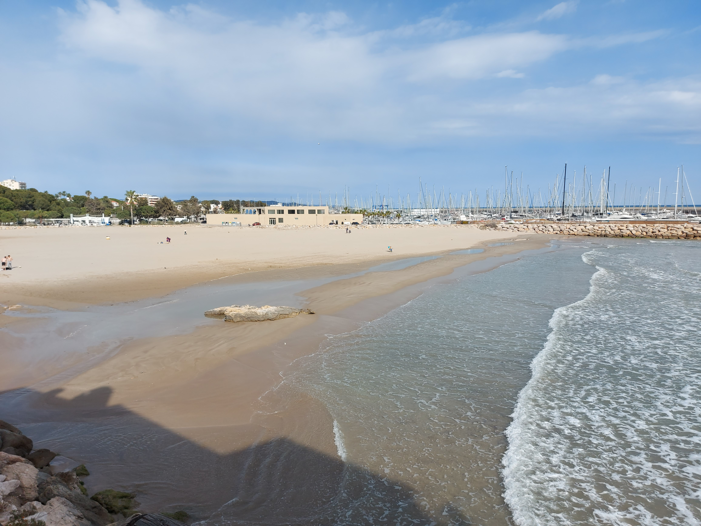
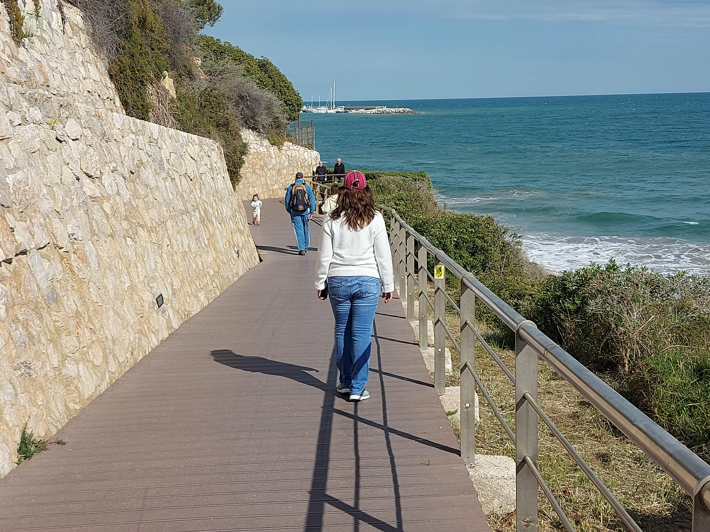
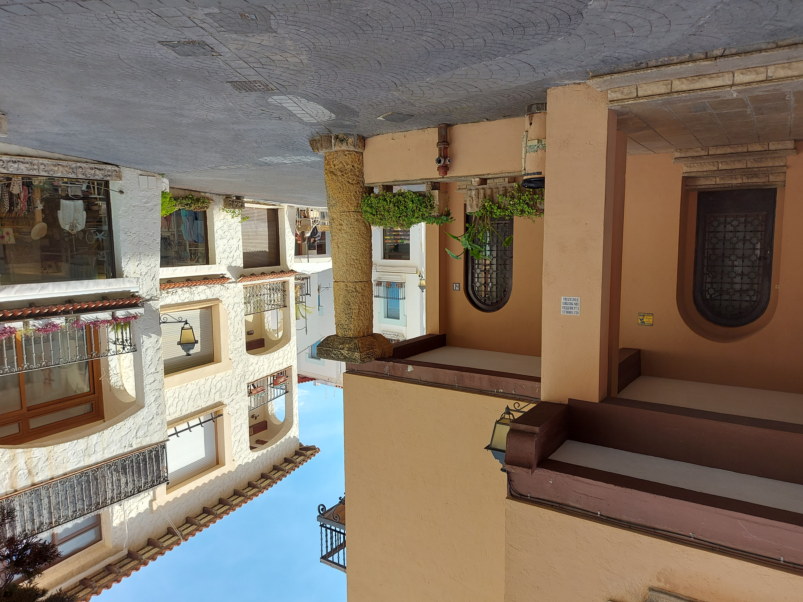
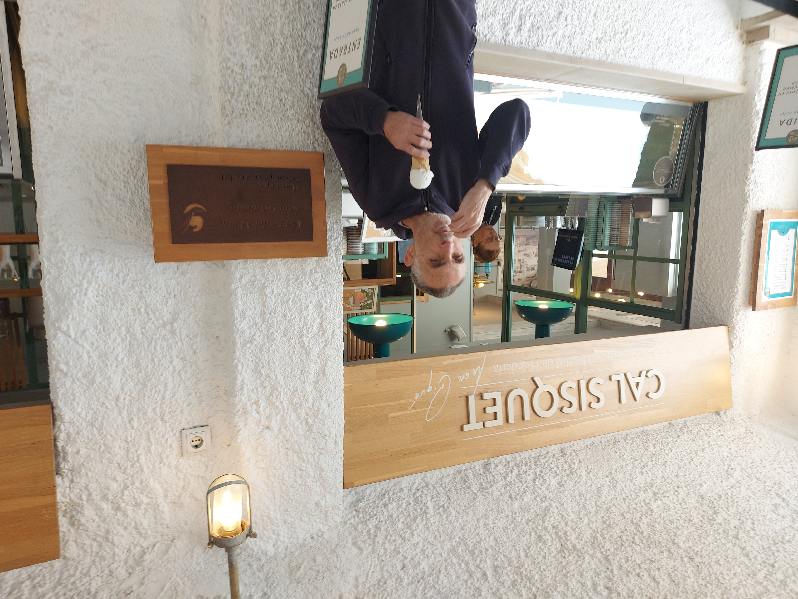
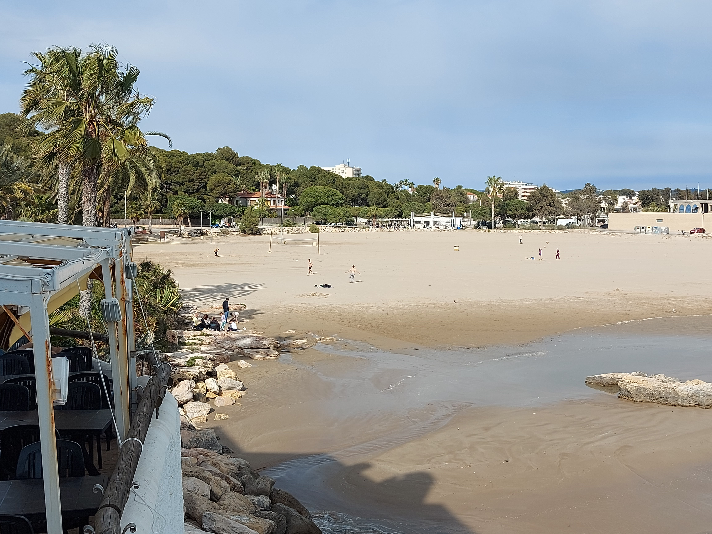

Inicio: Ermita de Barà
Punto de partida con vistas al mar y un entorno tranquilo ideal para comenzar la ruta.
Un paseo entre mar, historia y arquitectura en la costa de Tarragona
Descubrir rutaMagnífico paseo desde la ermita de la Mare de Déu de Barà, recorriendo el camino de ronda hasta el encantador barrio del Roc de Sant Gaietà.
Punto de partida con vistas al mar y un entorno tranquilo ideal para comenzar la ruta.
Sendero junto al mar que ofrece paisajes espectaculares y una experiencia relajante.
Un barrio pintoresco con calles estrechas, patios cuidados y una mezcla de estilos arquitectónicos únicos.










La zona ofrece una excelente variedad de restaurantes con vistas al mar donde disfrutar de la cocina mediterránea.